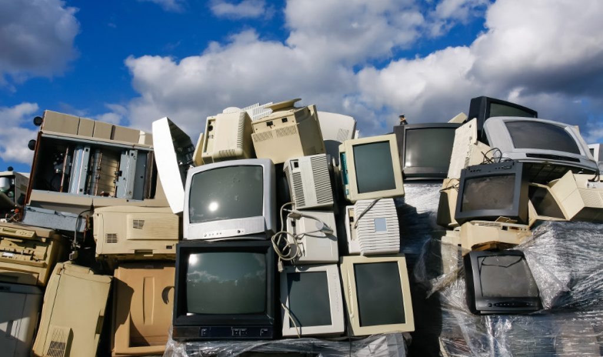

e-Waste
What is it?
e-Waste is the fastest growing waste stream in developed countries. It is made up of electronic equipment that has come to the end of its useful life and is destined for disposal. It includes for example: televisions, computers, cell phones, photocopiers, printers, stereos, DVD and VCR players, cameras and batteries.
What the DCC are doing?
We are addressing the e-Waste problem as we work through the Waste Management and Minimisation Plan.
We regularly lobby Central Government to require the electronics industry to put in place product
stewardship (producer responsibility) prioritising e-Waste such as take back schemes for computer waste
and redundant televisions. This mandate would prevent these items ending up in landfill - see Section 2
of The Waste Minimisation Act 2008 in the related information section.
We also support those organisations that have already taken the initiative in providing services by
having collection facilities for e-Waste at the Rummage Store at the Green Island Resource Recovery
Centre. These organisations are known to recycle e-Waste ethically.
What can you do to support e-Waste?
When you buy a new electronic device, ask the supplier if they will take your old electronic device for
recycling. Some distributors are starting to realise this is an add-on service they can offer customers.
Consumers can create the demand for recycling through their purchasing decisions, and place the
responsibility for recycling on the producers where it belongs.
Where you can put your e-Waste?
Dunedin now has more than one option for e-waste recycling.
In the city centre, TechCollect, which is a FREE national recycling service available is exclusively at
OfficeMax Retail Stores. OfficeMax Dunedin store is on Great King Street. The items accepted are;
computers, laptops and tablets, computer monitors, desktop printers, copiers, scanners and multifunction
printers, computer peripherals and cameras and video cameras (please note they do not accept TVs or
mobile phones).
There are e-Waste collection facilities at the Green Island Resource Recovery Centre for computer waste,
TVs, cell phones and other electronic waste items. A small recycling charge may apply to some items to
cover the costs of dismantling and/or special handling. Items collected here are dismantled by Cargill
Enterprises in South Dunedin.